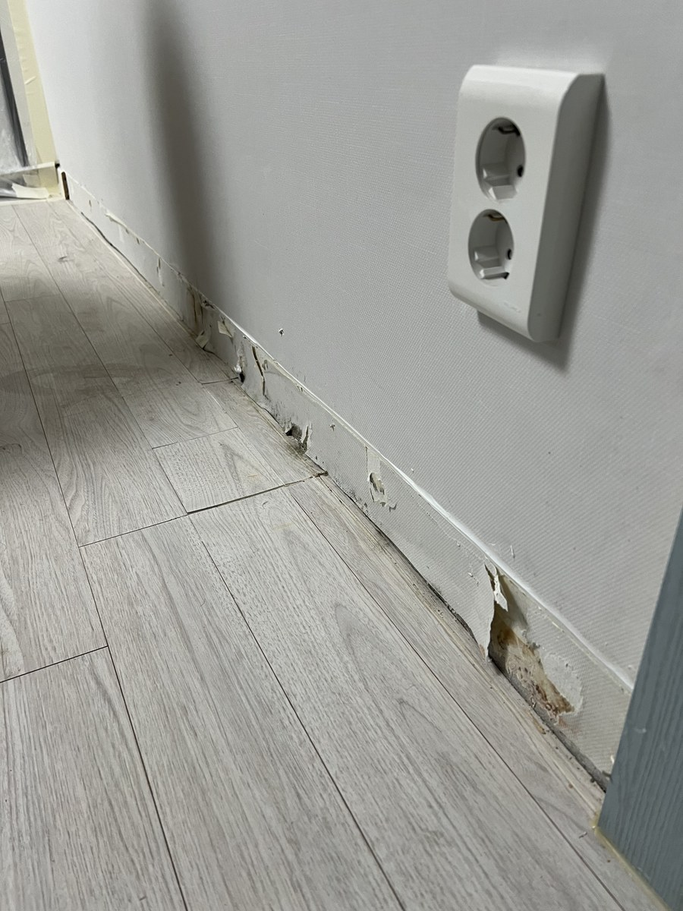
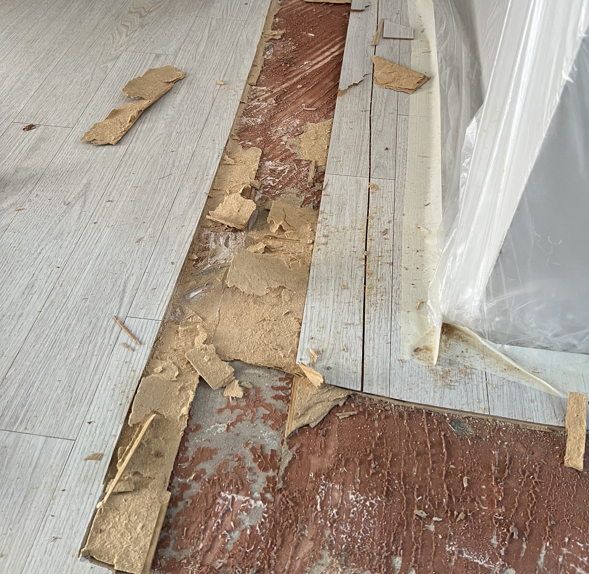
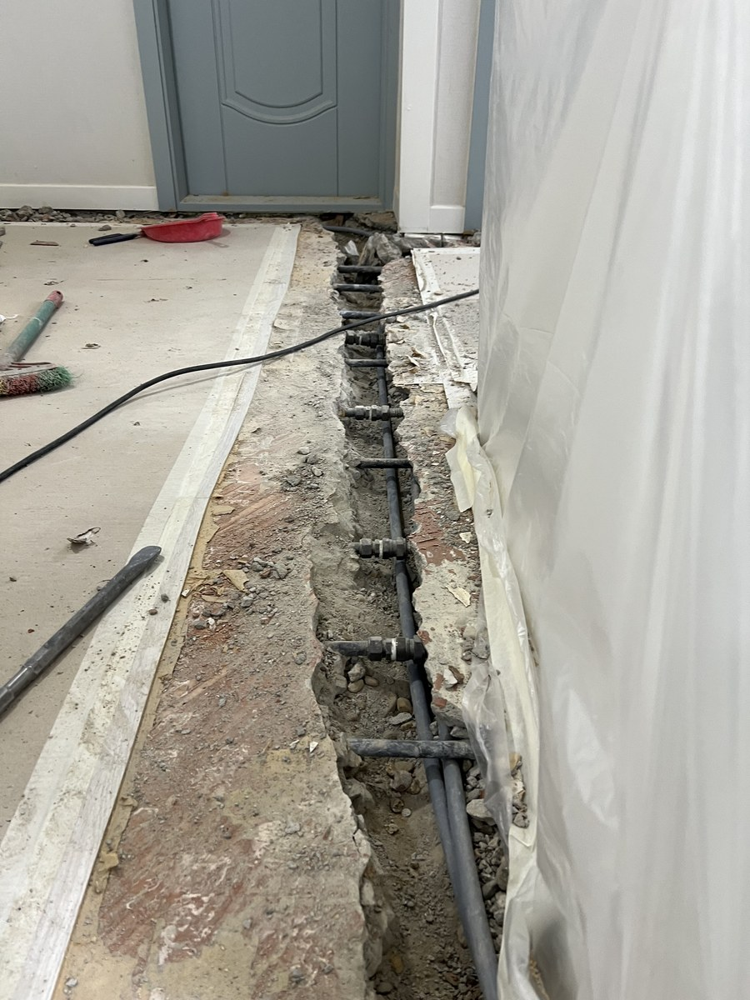
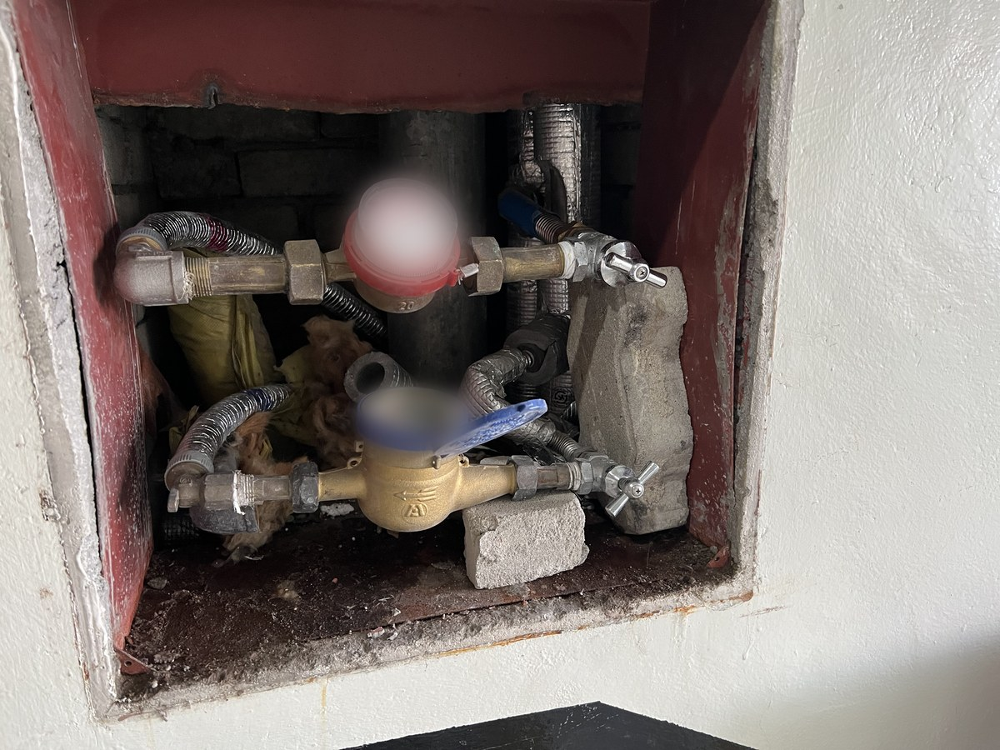
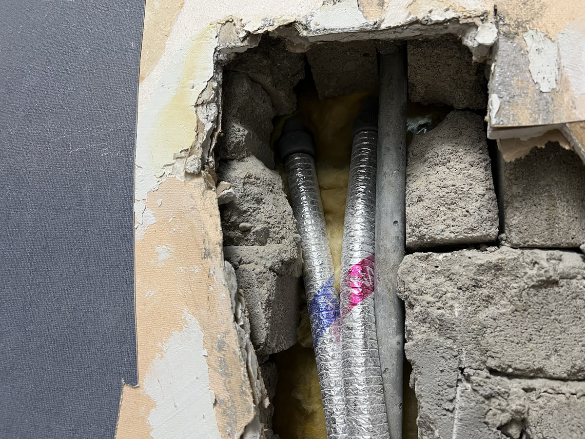
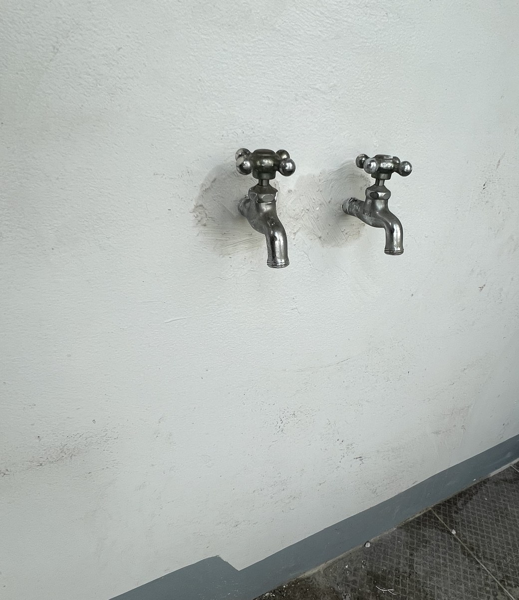
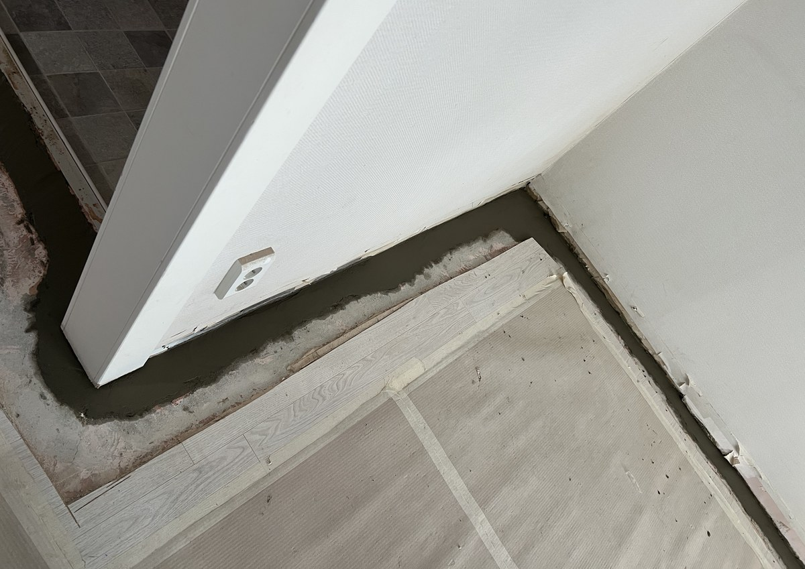

대전 중구 오류동 삼성아파트 냉·온수 배관 전체 교체｜바닥 홈을 따라 새 배관을 깔고 몰탈로 메우기까지

현장 작업 한눈에 보기
- 현장
- 오류동 삼성아파트 · 세대 냉·온수 배관
- 문제
- 세대 냉·온수 배관 전체 교체
- 작업
- 보양 · 벽 따라 바닥재 걷기 · 바닥 홈 따내기
새 배관 깔기 · 벽 속 구간·계량기함 연결 · 수전 달기
바닥 홈 몰탈 메움 - 결과
- 단계마다 사진으로 확인
교체 까닭·관 재질·수압 시험·바닥재 복구는 적지 않음
대전 중구 오류동 삼성아파트 세대의 냉·온수 배관 전체 교체 작업입니다. 벽을 따라 바닥재를 걷고 바닥을 따내 기존 배관을 드러낸 뒤 새 배관을 깔고, 벽 속 구간과 계량기함 쪽을 이어 바닥 홈을 몰탈로 메우기까지 11월 24·25·27일 사진 8장으로 소개합니다.
1. 작업 전 — 방 벽 아래쪽
대전 중구 오류동 삼성아파트 세대의 냉·온수 배관 전체 교체 현장입니다. 11월 24·25·27일 사흘 동안 남긴 사진을 순서대로 소개합니다.
첫 사진은 작업 첫날 아침에 찍은 방 벽 아래쪽입니다. 걸레받이 아래가 들뜨고 갈색 얼룩이 보입니다.

2. 보양 후 벽을 따라 바닥재 걷기
벽 쪽 물건은 비닐로 덮어 두고, 벽을 따라 바닥재를 띠 모양으로 잘라 걷어 냈습니다. 바닥 전체를 들어내지 않고 배관이 지나갈 자리만 걷어 냅니다.

3. 바닥을 따내자 드러난 기존 배관
바닥재를 걷은 자리를 벽을 따라 깨어 홈을 냈습니다. 홈 안으로 바닥 속에 묻혀 있던 기존 배관(검은 관)이 드러났습니다. 나머지 바닥은 보양지로 덮어 두었습니다.

4. 둘째 날, 새 배관 깔기
11월 25일에는 홈을 따라 새 배관을 깔았습니다. 분홍·파랑 테이프 표시가 감긴 은색 관이 새 배관이고, 사진 아래쪽 검은 관은 아직 남아 있는 기존 관입니다. 새 배관은 방문 아래를 지나 옆 공간으로 이어집니다.
5. 계량기함 안 연결부
계량기함 안입니다. 빨간 테 계량기(온수용)와 파란 테 계량기가 있고, 새 배관을 계량기 쪽 연결부에 이었습니다. 계량기 번호와 지침은 사진에서 흐리게 가렸습니다.

6. 벽 속 구간 — 벽을 따내고 새 관 두 줄
바닥에서 벽 안으로 올라가는 구간은 벽을 사각으로 따냈습니다. 벽돌 사이로 분홍·파랑 표시의 새 관 두 줄이 지나가는 모습입니다.

7. 셋째 날, 베란다 벽 수전
11월 27일 사진입니다. 베란다 벽에서 나온 배관 끝에 수전 두 개를 달았습니다. 수전 둘레는 벽을 메운 자리가 아직 젖어 있습니다.

8. 배관을 묻은 바닥 홈 메우기
새 배관을 묻은 바닥 홈은 몰탈로 메웠습니다. 벽과 방문 둘레를 따라 회색 몰탈 띠가 이어집니다.
이번 기록은 사진과 작업 메모로 확인되는 범위입니다. 배관을 바꾸게 된 까닭, 관 재질, 수압 시험 결과, 바닥재·걸레받이 복구는 자료가 없어 적지 않았습니다.
세대 배관 교체는 바닥재 걷기부터 바닥·벽 따내기, 새 배관 연결, 홈 메우기까지 범위가 넓습니다. 상담 때 방·욕실 개수와 바닥재 종류, 계량기함 위치를 함께 알려 주세요.
